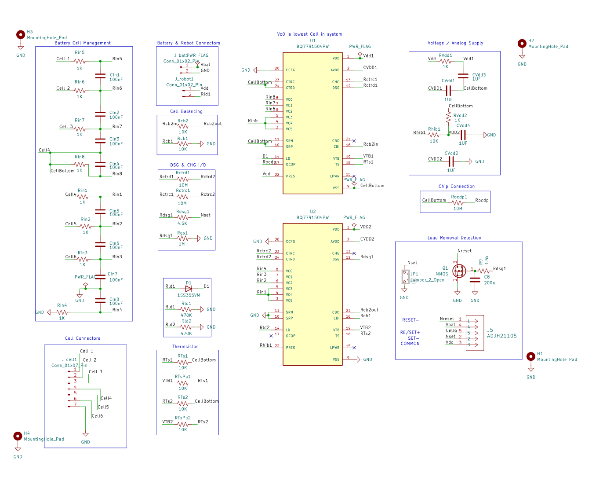
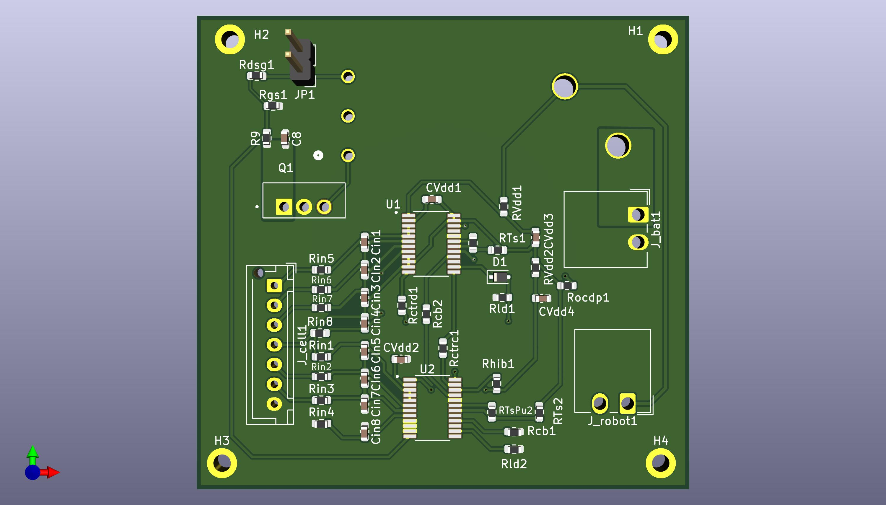

Purdue Lunabotics · Power and Hardware Team Developer
The board that disconnects the battery
Sep 2025 to Aug 2026 · West Lafayette, Indiana
A lithium pack on a rover will happily deliver a short circuit until it catches fire. This board watches six cells and opens the path to the robot the moment any of them is asked for too much.
The interactive version of this page is being built. What is here now is the summary and the design files.
What I did
- Designed a 24V, 20A six-cell battery sensing and protection board around the TI BQ77915 in KiCad, and verified the analog behavior in LTspice before committing to fabrication.
- Laid the board out for fabrication, then hand-assembled and micro-soldered 50+ components onto the finished board.
- Diagnosed voltage and thermal variances during bench testing to prevent system failure, and integrated the board into the rover power distribution system.
Design files

